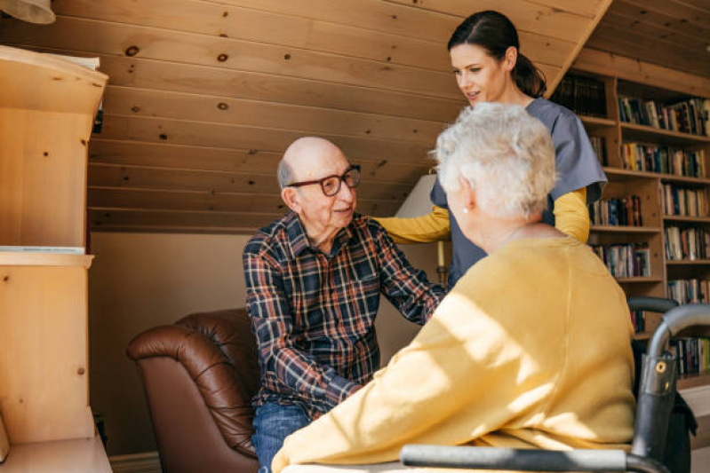

Reconhecendo mudanças de memória ou confusão, possíveis indicativos
que requerem atenção cuidadosa;
Superando obstáculos de mobilidade e equilíbrio, reduzindo o risco e
promovendo segurança;
Apoiando mudanças de humor e comportamento, oferecendo apoio
emocional essencial;
Coordenando medicações complexas, garantindo a aderência ao
tratamento;
Avaliando a independência ou a necessidade de assistência, visando o
bem-estar;
Os principais beneficios de ter um cuidador
Atendimento Humanizado
5 Anos no mercado
Acompanhamento total
Auxilio ao idoso em atividades externas, como ida ao médico e
recreações
Cuidado com a higiene pessoal do idoso, como fazer a barba e o corte
de unhas quando necessários
Planos Personalizados
Entre em contato para conhecer o melhor plano para você

Cuidador de idosos
Capacitados para lidar com o dia a dia dos cuidados com idosos e/ou
adultos com necessidades especiais, sempre orientados para se
tornarem verdadeiros amigos-companheiros.
Acompanhante Hospitalar
No Acompanhamento hospitalar, atua nos momentos difíceis de
internações ou tratamentos médicos em que os familiares não poderão
se fazer presentes.
DÚVIDAS FREQUENTES
Quais os benefícios de contratar um cuidador?
O cuidador contribui, de modo geral, para a melhora da qualidade
de vida da pessoa idosa, uma vez que o profissional é responsável
por auxiliá-lo em suas demandas, e por gerar impactos positivos na
autoestima, através da preservação da autonomia e independência.
Além dos benefícios para o idoso assistido, o trabalho do cuidador
também traz segurança à família.
É possível alterar o horário de atendimento que foi contratado, a
carga horária ou a frequência dos plantões?
Sim. O cronograma de atendimento e prestação de serviços é
totalmente elaborado de forma personalizada a fim de garantir a
qualidade, e o conforto do cliente.
Quais são as atividades que o cuidador pode e não pode realizar?
Atividades permitidas: Suporte com mobilidade; auxílo com
refeições; manutenção e organização do ambiente do idoso;
estimular a autonomia e independencia sempre que possível;
acompanhar o idoso em atividades e/ou compromissos externos;
cuidados com a higiene pessoal e íntima do idoso; ofertar a
medicação via oral nos horários corretos e conforme a prescrição
médica; melhorar a autoestima e socialização do idoso; ser uma
companhia agradável e agregadora; estimular aspectos cognitivos na
rotina da pessoa idosa.
Atividades não permitidas:
Fazer faxina; limpar e arrastar móveis; encerar o chão; limpar
janelas; limpar ambientes que sejam de terceiros e que não estão
inseridos no universo de circulação do idoso; cozinhar para
terceiros que não sejam o idoso; ter responsabilidade com
terceiros que não sejam seu idoso, tais como demais familiares,
conhecidos ou animais de estimação; responsabilidades em relação a
plantas ou jardim; deixar o idoso sozinho ou sem supervisão para
realizar atividades externas a pedido da família; aplicar remédios
injetáveis ou realizar procedimentos invasivos.